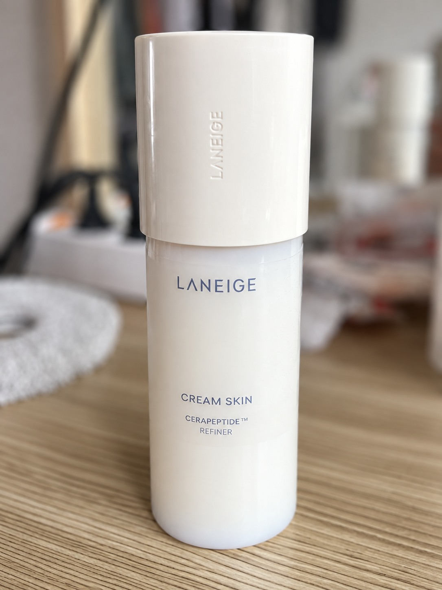
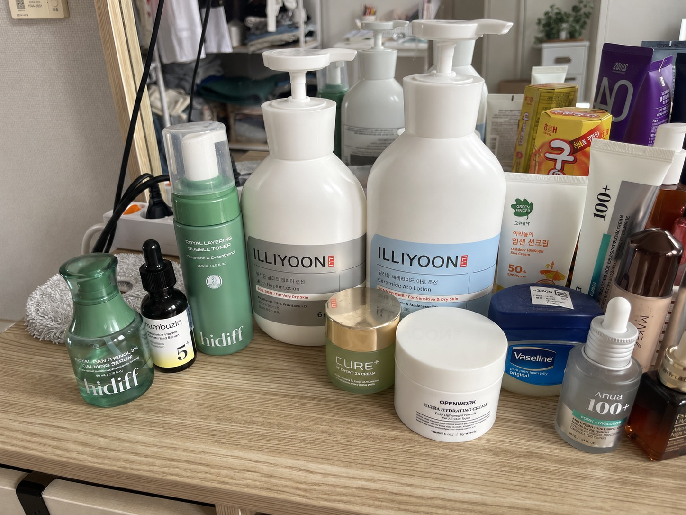
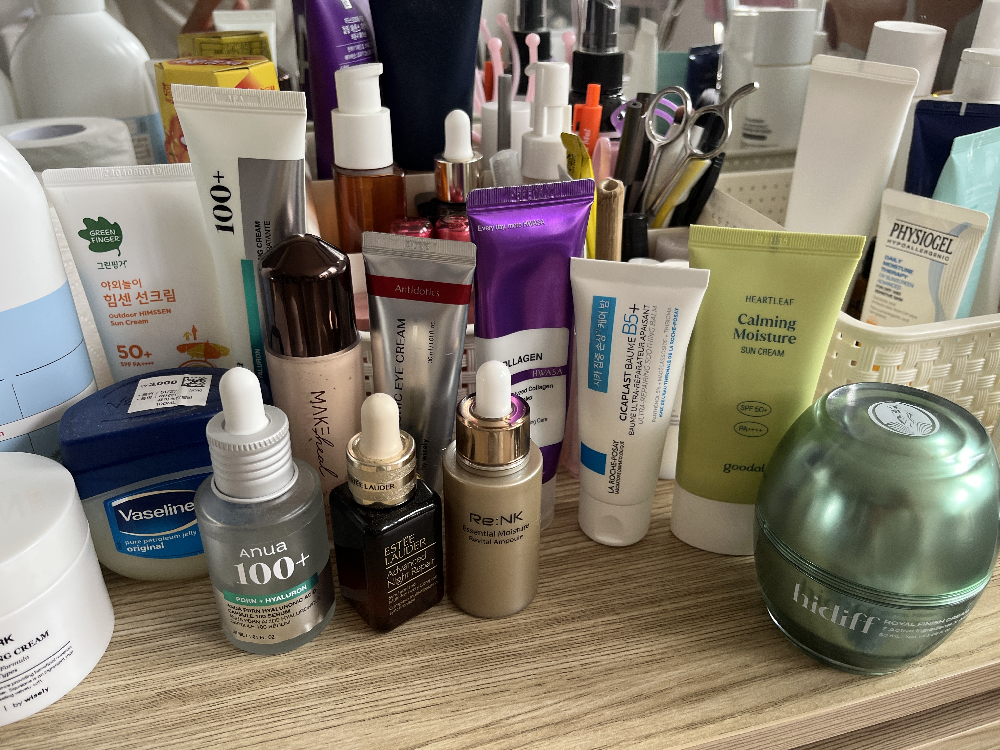

1
물세안 또는 순한 세안
밤새 기름기가 많지 않다면 미지근한 물만으로도 충분해요.
당김이 생기면 과세안 신호지금 필요한 건 제품을 더 쌓는 일이 아니라, 수분을 넣고 장벽으로 잠그는 순서입니다. 이미 좋은 보습 제품을 충분히 가지고 있어요. 오늘부터 루틴을 가볍고 정확하게 바꿔봅시다.

제품 이름이 정면으로 보이게 찍은 사진을 올리면, 브라우저가 라벨을 읽어 제품 종류와 아침·저녁 순서를 정리해 줍니다.
사진은 서버에 저장되지 않고 이 브라우저 안에서만 분석됩니다.
사진을 올리면 여기에 추천 순서가 나타납니다.
라벨이 작거나 빛이 반사되면 제품을 놓칠 수 있어요. 결과가 이상하면 제품 정면을 가까이서 다시 찍어 주세요.
버튼을 눌러 상황별 순서를 확인하세요. 한 번에 세럼을 여러 개 겹치지 않는 것이 핵심입니다.
밤새 기름기가 많지 않다면 미지근한 물만으로도 충분해요.
당김이 생기면 과세안 신호라네즈 크림 스킨을 손바닥으로 1회 눌러 흡수. 화장솜은 생략해 마찰을 줄여요.
한 번 바르고 30초일리윤 세라마이드 아토 로션이나 피지오겔 계열 중 하나만, 건조 부위는 한 번 더.
볼·입가 중심구달 어성초 선크림을 충분히 바르고 10분 정도 둔 뒤 메이크업해요.
섞어 바르지 않기선크림·메이크업을 순한 클렌저로 제거. 뜨거운 물과 뽀득한 마무리는 피하세요.
5–10분 이내세안 직후 물기가 조금 남은 얼굴에 손으로 눌러 주세요.
토너 패드 문지르지 않기아누아 PDRN+히알루론 또는 리엔케이 수분 앰플 중 하나. 에스티로더 ANR도 대체 가능해요.
많이보다 꾸준히일리윤 울트라 리페어 로션/세라마이드 아토 로션 또는 시카플라스트 B5+ 중 하나.
입가엔 바셀린 쌀알만큼아침 물세안, 저녁 1회만 세안. 얼굴에 샤워기 물줄기를 직접 맞지 않아요.
온도는 미지근하게한 겹이 흡수된 뒤 건조한 볼에만 두 번째 얇은 겹을 올려요.
겹마다 소량일리윤 로션 후 시카플라스트를 볼과 입가에 얇게. 밀리면 양을 절반으로.
손바닥으로 눌러 밀착밤에는 갈라지는 부위만 바셀린을 아주 얇게 덮어요. 여드름이 잘 나는 부위는 피하세요.
국소 사용비타민C, 각질 제거제, 레티놀, 향이 강한 제품을 잠시 중단해요.
따가움이 사라질 때까지순한 세안 → 크림 스킨(따갑지 않을 때만) → 장벽 크림으로 단순화합니다.
새 제품 추가 금지입가·콧방울처럼 갈라진 곳에는 바셀린을 얇게 올려 수분 손실을 줄여요.
상처·감염 부위 제외붉음, 가려움, 진물, 피가 나거나 보습제도 화끈거리면 피부과에 가세요.
지속되는 악건성은 진단 필요사진 앞면 라벨로 확인되는 범위의 분류입니다. 같은 역할의 제품은 동시에 다 바르지 않아도 돼요.
세안 뒤 첫 보습 단계. 건조한 날 1–2겹까지, 손으로 눌러 흡수하세요.
그날 가장 편안한 제품 하나를 기본 크림으로. 한겨울엔 로션 뒤 B5+를 건조 부위에만 추가하세요.
크림 전에 한 가지만 선택. 피부가 축축할 때 소량 쓰면 좋아요.
저녁 수분 세럼 자리에 사용. 이미 다른 세럼을 쓴 날에는 생략하세요.
건조하거나 따가운 날은 쉬고, 피부가 안정된 날 주 2–3회부터 시작하세요.
둘 다 한 번에 쓰기보다 크림 스킨 대신 토너를 쓰거나, 세럼 한 가지만 골라요.
얼굴용 우선. 그린핑거 야외놀이 선크림은 목·팔 등 야외 활동 부위에 활용하세요.
밤에 입가·콧방울·갈라진 부위만 쌀알만큼. 얼굴 전체에 두껍게 바를 필요는 없어요.


정교한 기술보다 양 조절과 기다리는 시간이 중요해요. 목표는 완벽한 커버가 아니라 얇고 편안한 피부입니다.
크림 스킨 → 가벼운 크림 → 선크림. 끈적임이 남으면 티슈 한 장을 얼굴에 살짝 눌러 겉도는 유분만 덜어냅니다.
손등에 덜어 양 볼, 이마, 턱에 작은 점으로 나눠 찍어요. 얼굴 전체를 한꺼번에 덮지 마세요.
코 옆과 볼 중앙을 먼저 얇게 두드리고 남은 양을 바깥쪽에 펼쳐요. 각질이 보이면 제품을 더 얹지 말고 깨끗한 면으로 눌러 정리합니다.
잡티에는 작은 브러시나 손가락으로 점을 찍고 가장자리만 두드려요. 얼굴 전체 2차 도포는 생략합니다.
앞머리가 닿는 이마, 콧방울처럼 무너지는 곳에만 아주 소량. 건조한 볼과 입가에는 바르지 않아요.
건성 피부를 위한 아침·저녁 관리 순서를 영상으로 천천히 확인해 보세요.
사진상 보습제와 선크림은 이미 충분합니다. 새 제품을 여러 개 사기보다 빈칸만 채우세요.
악건성처럼 느껴져도 아토피 피부염, 접촉 피부염 등 다른 원인이 있을 수 있어요. 이 페이지는 진단이나 치료를 대신하지 않습니다.
근거 참고: 미국피부과학회(AAD)는 짧은 미지근한 샤워, 물기 있는 피부에 즉시 무향 크림/연고를 바르기, SPF 30 이상 자외선 차단을 권합니다. AAD 건성 피부 관리 가이드 ↗